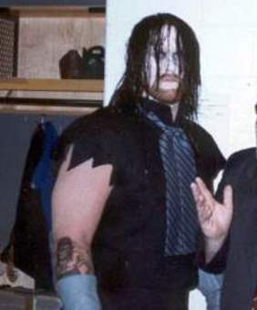
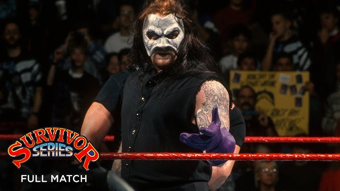
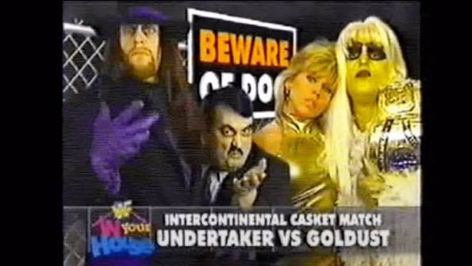

A história do Undertaker
Capítulo 1: Onde tudo deu início

No dia 22 de novembro de 1990, Ted Dibiase, como Million Dollar man, introduziu Undertaker, o personagem de Mark Calaway, no Survivor series daquele ano. No ano seguinte, venceu Jimmy Snuka e consolidou sua primeira vitória em um dos maiores, se não o maior, recorde da WWE, a famosa e lendária Streak, na Wrestlemania 7. No mesmo ano, lutou e venceu Hulk Hogan, o campeão da época no Survivor Series, mas perdeu em uma semana.
Capítulo 2:
O início da Streak
Em 1992, Undertaker enfrentou Jake Roberts na Wrestlemania 8. Undertaker e Jake Roberts eram parceiros, lutando contra lutadores como Ultimate Warrior e Macho Man Randy Savage, mas num segmento, Undertaker impediu Jake Roberts de atacar Miss Elizabeth, esposa e manager de Randy Savage. Undertaker venceu Roberts e conseguiu sua segunda vitória em Wrestlemania.

Em 1993, Undertaker enfrentou Giant Gonzalez. No Royal Rumble daquele ano, Undertaker estava predominando a luta, até que chegou Gonzalez, espontaneamente, e não só eliminou Undertaker como espancou ele. Undertaker desafiou Giant Gonzalez para a Wrestlemania e Giant Gonzalez logo aceitou. A luta em si tava muito desequilibrada e ruim, o próprio Undertaker dis que não gostou da luta e o motivo é simples: Gonzalez nem atacou Undertaker, ms sim colocou um pano com propofol no rosto do Undertaker, assim perdendo por desclassificação e dando ao undertaker sua terceiura vitória.

Em 1994, Undertaker enfrentou Yokozuna no Royal Rumble. A luta seria uma luta de caixão, onde vence aquele que prender o adversario num caixão. Undertaker estava quase vencendo, até que vários homens o impediram de vencer e deram a vitória a Yokozuna. Antes que ele saísse, Undertaker apareceu no telão dizendo que não estava morto e iria voltar.

Undertaker ficou sumido por algumas semanas, até que Ted Dibiase disse que "encontrou o Undertaker" e ele apareceu, mas ele nitidamente era outro cara. Menor, mais fraco e bem menos ágil.

O "Undertaker" lutou em lutas semanais, mas Paul Bearer apareceu em um segmento e disse que o Undertaker não era... O Undertaker? Como assim? Paul Bearer disse que aquele não era o Undertaker de verdsade, mas sim um impostor e disse que iria encontrar o verdadeiro Undertaker. Ted Dibiase controlava e atraía seu Undertaker com notas de dinheiro, algo que não era característico do personagem, pois ele era atraído pela urna de Paul Bearer. Paul Bearer e Ted Dibiase afirmaram uma luta no SummerSlam, onde o Undertaker vencedor seria declarado o verdadeiro Undertaker.

Ted Dibiase chegou apresentando seu Undertaker que fez sua entrada clássica, mas então Paul Bearer apresentou o seu Undertaker que estava... diferente.

O Undertaker de Ted Dibiase aparentava estar intimidado com o Undertaker de Paul Bearer. Na luta, não dava para saber quem era o verdadeiro, pois ambos tinham forças semelhantes e habilidade também. No fim, o Undertaker vencedor foi...

O Undertaker de Paul Bearer venceu e Ted Dibiase saíu correndo, com medo de que Undertaker pudesse fazer algo contra ele.
Capítulo 4: A vingança de Undertaker
Naquele ano, Undertaker perdeu para Yokozuna no Royal Rumble, mas disse que iria voltar e aconteceu no Summerslam. Undertaker, após sua vitória sobre o falso Undertaker, parecia mais forte que o habitual e decidiu ter uma revanche contra Yokozuna, novamente numa luta de caixão no Survivor Series daquele ano, mas não seria fácil assim, pois ele sabia que poderia perder da mesma forma, por isso ele convocou um aliado especial. Ninguém menos que Chuck Norris.

A luta estava sendo desenrrolada apenas no ringue e um pouco fora e Chuck Norris impedia qualquer um de atrapalhar o Undertaker. No final, Undertaker venceu Yokozuna e encerrou a rivalidade entre eles. No ano seguinte, em 95, Undertaker entru em rivalidade com o grupo liderado por Ted Dibiase, a Million Dollar Corporation, desde a derrota do falso Undertaker no SummerSlam, por isso Undertaker enfrentou I.R.S no Royal Rumble e venceu, mas os capangas do ted Dibiase roubaram a urns do Paul Bearer. Undertaker ficou furioso quanto a isso, mas Ted Dibiase não ligou e não devolveu a urna. Porém, Ted Dibiase decidiu que Undertaker enfrentaria King Kong Bundy na Wrestlemania 11 para recuperar a urna, caso vença a luta.

Ele venceu a luta, porém Kama roubou novamente a urna antes de Undertaker pegar a urna. Undertaker, furioso, desafiou kama no SummerSlam, numa luta de caixão.

Undertaker venceu a luta e finalmente recureou a urna. Naquele ano também, Undertaker enfrentou Mabel no King of The Ring daqule ano, mas perdeu para o mesmo, assim começou uma rivalidade. No RAW do mẽs, ele, junto de kevin Nash e Shawn Michaels enfrentaram Mabel, Yokozuna e Owen Hart. Eles perderam, mas o pior não era esse, e sim o final, pois Undertaker continuou sendo atacado por Yokozuna e Mabel, oq resultou em uma lesão na área da testa, oq o deixou afastado por uns meses. No Survivor Series do, Undertaker iria retornar, liderando o time com Rikishi, Savio Vega e Henry O Goddin, que iriam lutar contra Jerry Lawler, Kane, Triple H e King Mabel.

No pay-par-view, Undertaker fez um retorno após a lesão com um visual novo: uma máscara de fantasma da opera

Ele e seu grupo venceram a luta.
No ano sseguite, Undertaker enrentou Diesel na WretleMania 12 venceu.

Capítulo 5: Lord of Darkness
No mesmo ano, Undertker entrou em rivalidade com Goldust, os quais se enfrentaram pelo título intrcontinental numa casket match.

Undertkr estaa a prestes e ener a luta, quando Mankind apareceu ddentro do caixão e fez Undertaker perder a luta e o título.

Undertaker e Goldust se enfrentaram novamente pelo título.

Undertaker novamente estava a ponto de vencer, mas Mankind o fez perder, e foi por esse motivo que Undertaker nunca foi campeão intercontinental. Undertaker e Mankind entraram numa rivalidade que levou ao SKing of The Ring, onde Mankind venceu.

Undertaker percebeu Paul Bearer estava mais pro lado de Mankind do que dele, e desafiou Mankind pra uma Boiler Room Brawl, onde eles estariam na na sala Boiler e venceria aquele que tivesse a urna entregue por Paull Bearer.

Undertaker já estava no ringue, pronto para pegar a urna, porém Paul Bearer não entregou a ele, mas sim para Mankind.